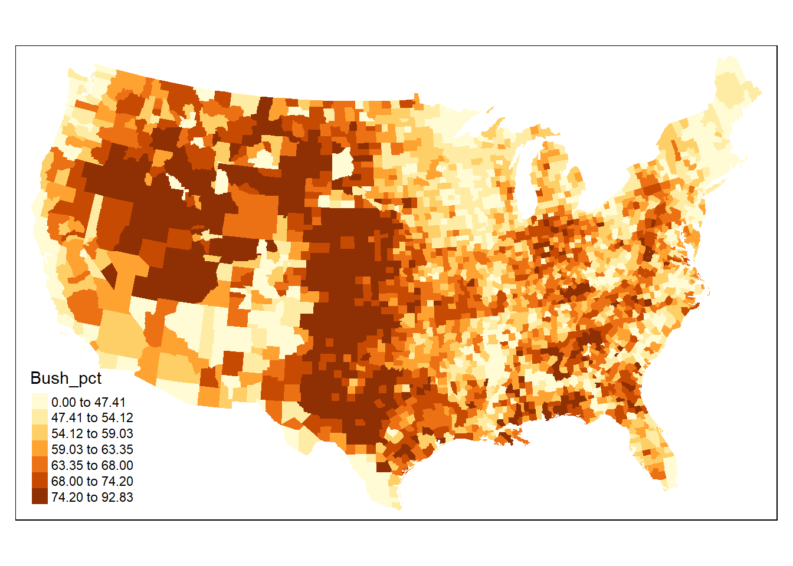
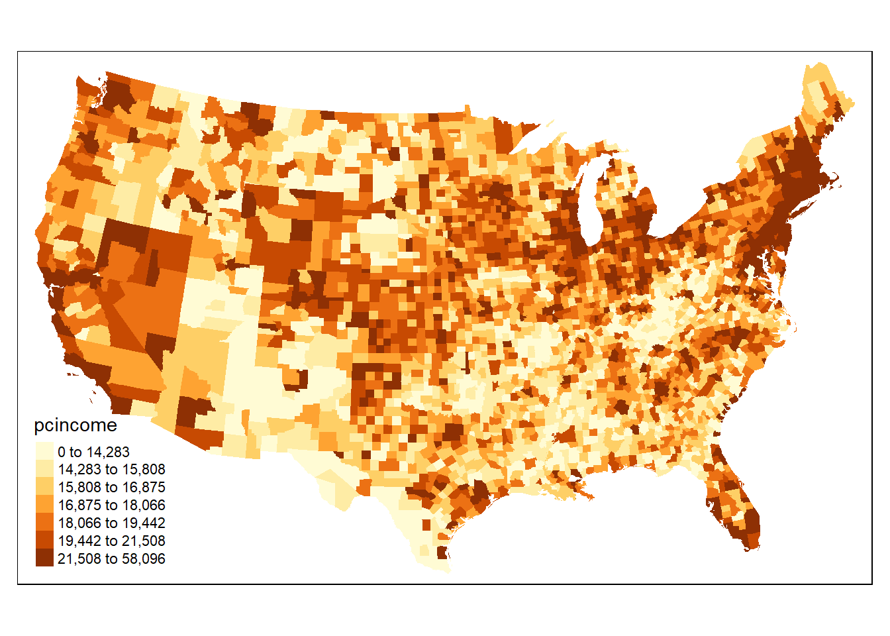
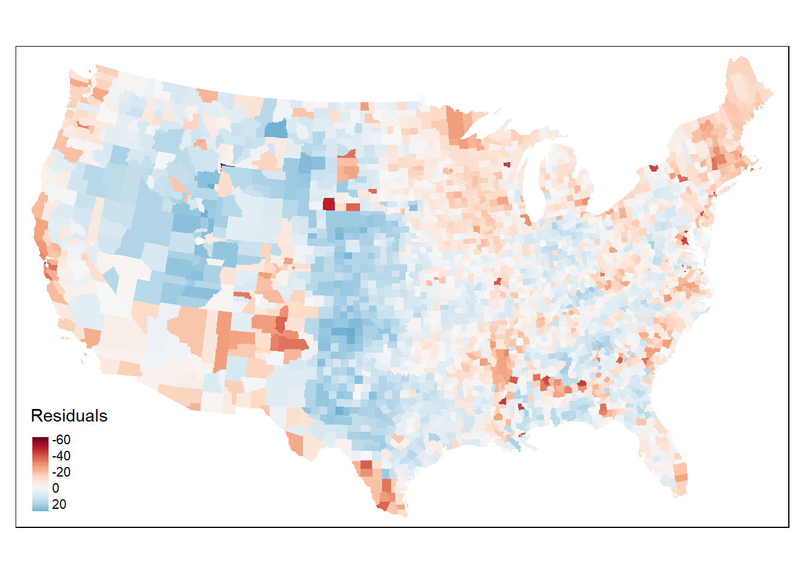
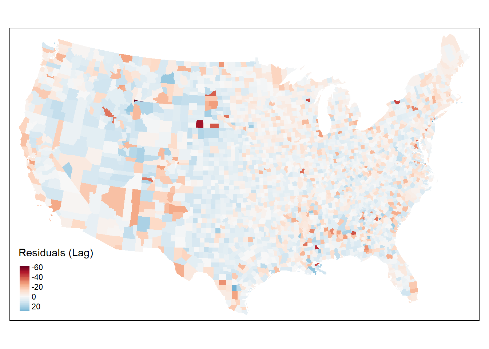
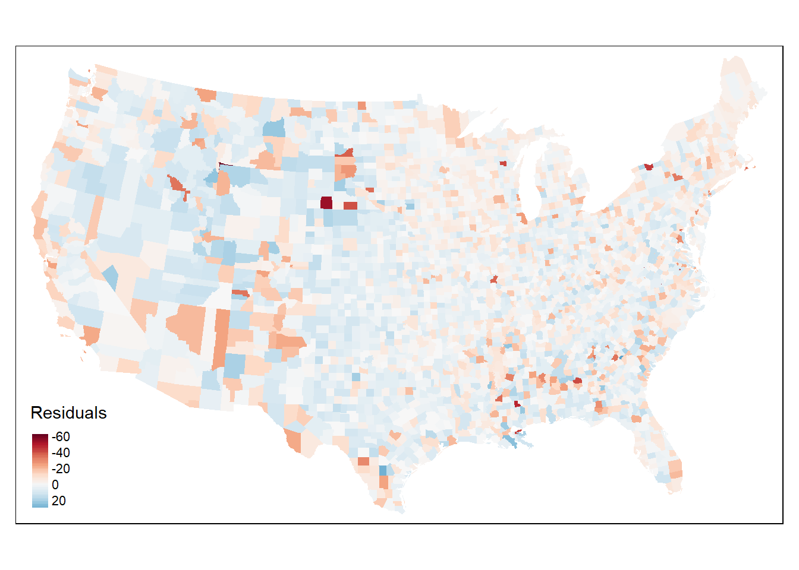

Spatial Regression
Spatial Regression in R
Regression residuals are the primary way to assess if a regression violates any assumptions of the general linear model. Although all the assumptions are important, the violation of the assumption of independence is common with spatially organized data. This has led to the development of a family of alternate regression models that can accommodate spatial dependence. We’ll work with two of theme models continuing from the previous two R Modules. These are known as the spatial lag model and spatial error model. Both models account for spatial dependence by including new parameters that must be estimated; each model, however, handles this in a different way…
Spatial Lag Model
The spatial lag model, shown below, introduces a new explanatory variable and an associated coefficient that must be estimated:
\[ y = \rho W_y + \beta X + \varepsilon\]
The new variable, \(W_y\), is the “lag variable” and represents, for each spatial unit, the weighted average of the values of the observations among its neighbors (when working with a row-standardized matrix).
The term \(\beta X\) represents our independent variables, and epsilon (\(\varepsilon\)) is our “error term”, which describes the amount by which an observed value differs from the expected value, based on the whole population.
Just like in “normal” regression models, there exists a correlation coefficient, in this case rho (\(\rho\)), and for spatial regression the value of \(\rho\) must be estimated. \(\rho\) is one of the key statistics; our null hypothesis is that \(\rho = 0\), which represents zero spatial dependence in the \(W_y\) dependent variable.
A statistically significant result, therefore is when \(\rho \neq 0\), meaning we have successfully adjusted our model to account for any spatial dependence.
As with Moran’s I, \(\rho\) can be either positive, indicating positive spatial dependence, or negative, indicating negative spatial dependence.
Spatial Error Model
The other model we have is known as the spatial error model. Unlike the lag model, the error model addresses spatial dependence by separating the error term \(\varepsilon\) into two components: one that contains the “random error” (\(\xi\)), and one that contains the spatially-autocorrelated error components (\(\lambda W_\varepsilon\)):
\[y = \beta X + \varepsilon; \;\varepsilon = \lambda W \varepsilon + \xi\]
As with the spatial lag model, the spatial error model has a coefficient, lambda (\(\lambda\)), which must be estimated. The remaining errors, xi (\(\xi\)), should be randomly distributed as per the conventional general linear model. The interpretations of \(\lambda\) are similar to that of \(\rho\) in the lag model, as is the hypothesis test informed by the coefficient’s value and \(p\)-value (i.e., our null hypothesis is that \(\lambda = 0\))
Importance of Spatial Autocorrelation
Both of these models are computationally intensive and require the extra steps of defining a neighborhood construct and its associated weighted matrix, so why bother with calculating this?
The problem of spatially autocorrelated residuals means that we really can’t trust our results. Think about it like this: if values that are spatially close to one another have similar values, if we don’t account for spatial autocorrelation, our variables appear to have strong correlation. Not only that, without accounting for spatial autocorrelation, our \(p\)-values are much lower, so it also looks like our model is much more statistically significant. This is a long way to say that any inferences we make based on such models, without accounting for spatial autocorrelation, could be very inaccurate.
Bringing in the Data
This week, we’ll perform our spatial models on a new set of data: a Shapefile containing the results from the 2004 presidential election, and is available to download from the Google Drive, or from here:
Unzip this folder and load the results into R with sf.
In addition, we’ll need to transform (reproject) our data into a
crs which uses linear units; we’ll use the US National Atlas
Equal Area, EPSG:2163. Refer to R Modules 8 and 9 on how to
transform your data with sf.
By the way, if you want to look up more coordinate reference systems, check out https://epsg.io
For our data, we want to model the dependent variable as a function of our independent variable(s). Our DV is the percent of voters who voted for Bush, and our IV is per capita income.
library(tmap)
tm_shape(election) +
tm_polygons(
col = "Bush_pct",
border.col = NULL,
style = "quantile",
n = 7
)
tm_shape(election) +
tm_polygons(
col = "pcincome",
border.col = NULL,
style = "quantile",
n = 7
)
Take a look at the dataset with tools like View() to
familiarize yourself with the data and the variables.
Spatial Weights
Let’s make a spatial weights matrix, just as in previous Modules:
library(spdep)
us_neighbors <- election %>%
poly2nb(queen = TRUE)
us_centroids <- st_centroid(election)$geometry
us_neighbors_w <- us_neighbors %>%
nb2listw(
style = "W",
zero.policy = TRUE
)We can plot the connections to see if they look good:
us_neighbors %>%
nb2lines(
coords = us_centroids
) %>%
qtm()
Testing Autocorrelation
We can run a global Moran’s I or Geary’s C test on both variables
that we’ll use in the regression models. First, let’s test for spatial
autocorrelation among the dependent variable, Bush_pct:
moran.test(
x = election$Bush_pct,
listw = us_neighbors_w,
zero.policy = TRUE
)
geary.test(
x = election$Bush_pct,
listw = us_neighbors_w,
zero.policy = TRUE
)Then, perform the tests on the independent variable,
pcincome:
moran.test(
x = election$pcincome,
listw = us_neighbors_w,
zero.policy = TRUE
)
geary.test(
x = election$pcincome,
listw = us_neighbors_w,
zero.policy = TRUE
)What do the results show? Both variables are strongly and positively spatially autocorrelated, when using the Queen’s case \(W_{ij}\). This is a clue that we should see spatially autocorrelation among the residuals from a basic linear regression. If so, we’ll need to use a spatial regression model (hint, we will!) to estimate the “true nature” of the relationship.
Questions
1. Use lm() to estimate
Bush_pct ~ pcincome using ordinary least squares (OLS).
Plot the residuals on a map (look back to R Module 7) and
test the residuals for spatial autocorrelation. Provide both an
example of your map and the results from your spatial autocorrelation
test in your R Markdown report. - Hint: Your results should
look somewhat similar to the results below:

Performing Spatial Lag
From our map, it definitely looks like there’s spatial
autocorrelation among our residuals. After testing the residuals using
Moran’s I or Geary’s C, we’ve successfully confirmed that our residuals
are spatially autocorrelated; what does this mean, exactly? For
starters, it strongly affects the apparent relationship between
Bush_pct and pcincome. Our linear model
suggests that there is a significant relationship between the two
variables, but after seeing how strongly the residuals are spatially
autocorrelated, it’s difficult to say if this relationship is actually
this strong, or if it’s due to spatial proximity.
Let’s perform our first spatial regression using the spatial lag
model. Our function lagsarlm from the
spatialreg package works very similarly to the traditional
lm function, with a few additional arguments to input our
spatial weights matrix. Let’s give it a shot:
library(spatialreg)
# This function takes a good bit of time to run; maybe ~5 mins depending on the
# machine you're running this on.
bush_lag <- lagsarlm(Bush_pct ~ pcincome,
data = election,
listw = us_neighbors_w,
zero.policy = TRUE,
quiet = FALSE
)
# The `broom` package has many functions for "tidy-ing" data, and includes a
# Method for tidying the results from the lagsarlm function. You can also use
# this function on the results from ANOVA, lm, moran.test, etc!
broom::tidy(bush_lag)## # A tibble: 3 x 5
## term estimate std.error statistic p.value
## <chr> <dbl> <dbl> <dbl> <dbl>
## 1 rho 0.751 0.0143 52.5 0
## 2 (Intercept) 14.1 1.06 13.3 0
## 3 pcincome 0.0000546 0.0000338 1.62 0.106The values we’re interested are our \(\rho\) statistic, Rho, and our
\(p\)-value. Looking at this result, we
can confidently say that the value of Bush_pct is likely to
have higher values, if neighboring counties have higher values, and
lower values if the neighboring counties have lower values. Notice,
also, that our independent variable pcincome now has a
\(p\)-value of 0.1058; it’s no
longer significant when accounting for spatial
autoccorelation!
Checking our Residuals
After performing our spatial lag model, it’s important to check our results to verify if we’ve truly accounted for spatial autocorrelation. All we need to do, then, is run a Moran’s I test on the residuals of the spatial lag model, and if the value of \(I\) is close to 0, then there’s no spatial autocorrelation among our residuals, which means our spatial lag model performed adequately.
election$bush_lag_res <- bush_lag$residuals
lag_moran <- moran.test(
x = election$bush_lag_res,
listw = us_neighbors_w,
zero.policy = TRUE,
alternative = "two.sided"
)tm_shape(election) +
tm_polygons(
col = "bush_lag_res",
border.col = NULL,
palette = "RdBu",
style = "cont",
midpoint = 0,
title = "Residuals (Lag)"
)
This looks pretty good; ideally, our value of \(I\) would be exactly 0, but this tells us
that any remaining spatial autocorrelation is very weak. Plotting the
residuals from our lag model (in exactly the same way we did from the
residuals from lm()), we can see that there’s no strong
spatial pattern that emerges, unlike our residuals from
lm().
Questions
- Modeling
Kerry_pct ~ pcincome, perform the following steps:
- Evaluate the relationship between the variables using
lm() - Plot the resulting residuals, then test for autocorrelation with
moran.test(). Provide your map! - Estimate the same relationship, using the spatial lag model
(
spatialreg::lagsarlm()) - Perform a Moran’s I test on the residuals from the lag model and report your results. Plot the residuals from the spatial lag model, and include in your report.
- Is there evidence of remaining spatial autocorrelation in the residuals?
Spatial Error Model
Now that we’ve seen what the spatial lag model does, let’s try running a spatial error model:
bush_error <- errorsarlm(
formula = Bush_pct ~ pcincome,
data = election,
listw = us_neighbors_w,
zero.policy = T,
quiet = FALSE
)
summary(bush_error)##
## Call:
## errorsarlm(formula = Bush_pct ~ pcincome, data = election, listw = us_neighbors_w,
## quiet = FALSE, zero.policy = T)
##
## Residuals:
## Min 1Q Median 3Q Max
## -62.1908 -4.3998 1.2162 5.6286 33.8837
##
## Type: error
## Regions with no neighbours included:
## 36 691 711 883
## Coefficients: (asymptotic standard errors)
## Estimate Std. Error z value Pr(>|z|)
## (Intercept) 5.8347e+01 9.9104e-01 58.8747 < 2e-16
## pcincome 8.0218e-05 4.1698e-05 1.9238 0.05438
##
## Lambda: 0.76197, LR test value: 1803.8, p-value: < 2.22e-16
## Asymptotic standard error: 0.014223
## z-value: 53.574, p-value: < 2.22e-16
## Wald statistic: 2870.2, p-value: < 2.22e-16
##
## Log likelihood: -11428.06 for error model
## ML residual variance (sigma squared): 78.896, (sigma: 8.8823)
## Number of observations: 3111
## Number of parameters estimated: 4
## AIC: 22864, (AIC for lm: 24666)And of course, we should map our results:
election$bush_err_res <- bush_error$residuals
tm_shape(election) +
tm_polygons(
col = "bush_err_res",
border.col = NULL,
palette = "RdBu",
style = "cont",
midpoint = 0,
title = "Residuals"
)
Finally, let’s test our residuals for any remaining spatial autocorrelation:
moran.test(
x = election$bush_err_res,
listw = us_neighbors_w,
zero.policy = TRUE,
alternative = "two.sided"
)##
## Moran I test under randomisation
##
## data: election$bush_err_res
## weights: us_neighbors_w n reduced by no-neighbour observations
##
##
## Moran I statistic standard deviate = -4.7192, p-value = 2.367e-06
## alternative hypothesis: two.sided
## sample estimates:
## Moran I statistic Expectation Variance
## -0.0510920669 -0.0003219575 0.0001157378While it’s a little bit higher than the value from the spatial lag model, it still shows that we’ve accounted for most of the spatial autocorrelation. Think about some of the other factors that could have been affecting our spatial regression models, for example, is the neighborhood (Queen’s case) the best fit for our data?
Questions
- Using your
Kerry_pct ~ pcincomeanalysis, perform the spatial error model. Provide the results of the model and plot its residuals on a map. Then, perform Moran’s I on the resulting residuals, and provide the Moran’s I and p-value. Explain any differences in the values between:
- The coefficient variables (\(\lambda\) and \(\rho\)),
- The p-values in the spatial regression models,
- The Moran’s I statistics, and,
- The p-values from the Moran’s I
© 2022 Maggie Sugg & Harrison Brown. v.0.0.13